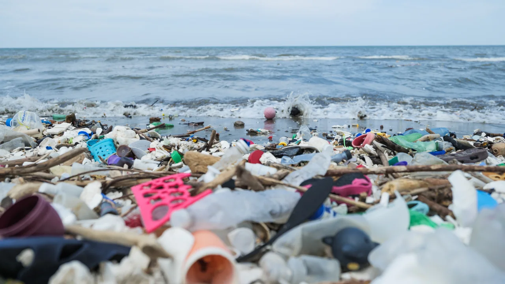
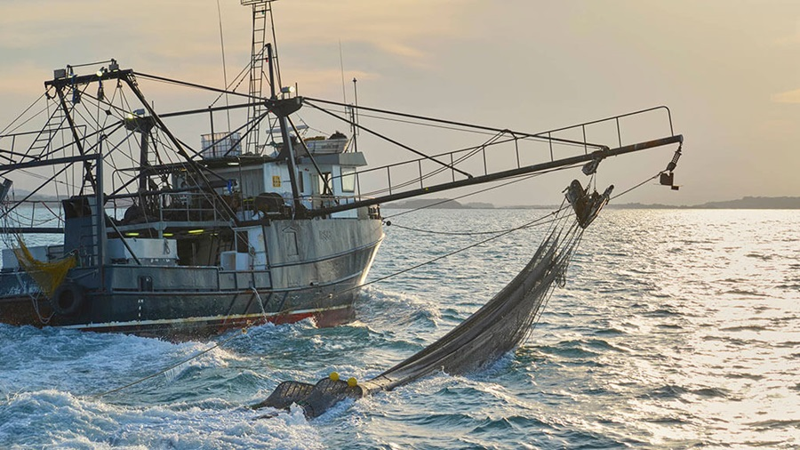
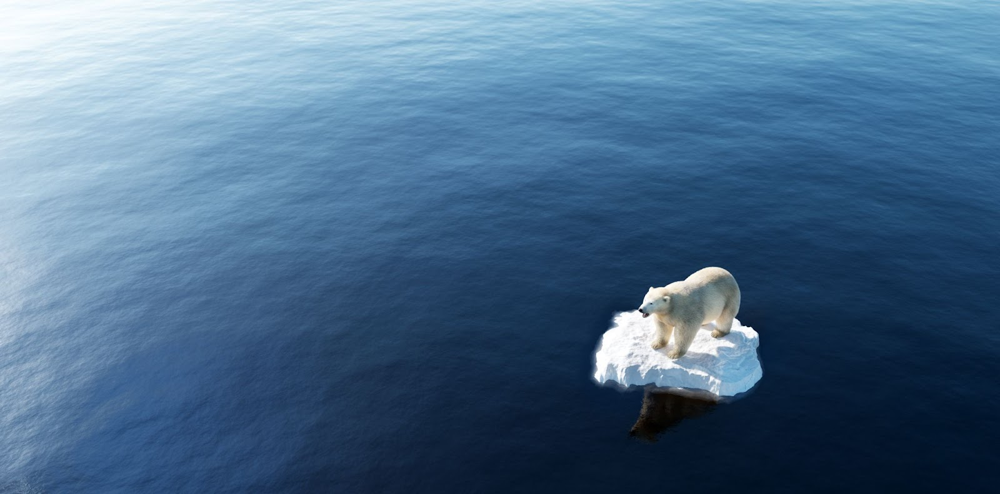
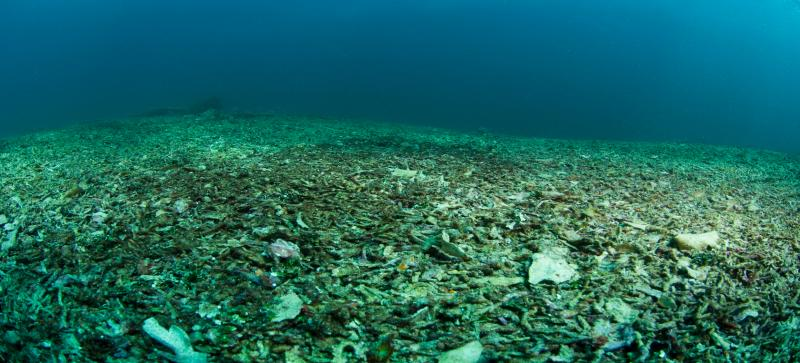
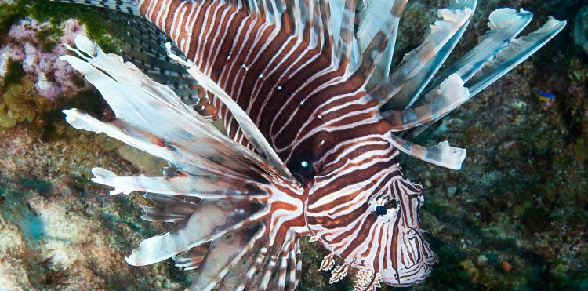

.png)
Contributing Factors and Examples
.jpg)
The 'Life Below Water' goal addresses various contributing factors that pose challenges to the conservation and sustainable use of oceans, seas and marine resources. Here are some key factors and examples below:
-
Factor 1 - Pollution
Pollution from various sources, such as industrial waste, agricultural runoff, and plastic waste, negatively impacts marine ecosystems. However, some positive actions have been taken in recent years to reduce the amount of pollution entering the ocean.
 -
Factor 2 - Overfishing
Overfishing disrupts marine food chains and depleted fish populations.Many environmental issues threatening the oceans are a result of human activity, such as pollution, overfishing, and climate change.
 -
Factor 3 - Climate Change
Rising sea temperatures, ocean acidification, and extreme weather events caused by climate change pose significant threats to marine ecosystems.Due to overfishing, coral reefs are increasingly threatened by the loss of fish and other marine life, which are crucial to the health of these fragile ecosystems.
 -
Factor 4 - Habitat Destruction
Destruction of coastal habitats, such as mangroves, seagrasses, and coral reefs, diminishes the capacity of these ecosystems to support diverse marine life. If the destruction continues, these ecosystems could become even more vulnerable to the effects of climate change, leading to even greater declines in biodiversity.
 -
Factor 5 - Invasive Species
Introduction of non-native species to marine environments disrupts the natural balance and can have detrimental effects on native species and ecosystems. Therefore, it is important to protect the marine environment from the introduction of invasive species, which can be devastating for marine life and ecosystems.

Example 1 - Oil Spills
Oil spills can harm marine life, and plastic pollution can entangle and suffocate marine animals. The Ocean Conservancy works to educate the public about the impact of oil spills and plastic pollution on marine life.
Example 2 - Cod Populations
Atlantic cod population off the coast of Newfoundland, Canada, collapsed due to overfishing in the 1990s. The collapse of the Atlantic cod population off the coast of Newfoundland, Canada, demonstrated the need for awareness and conservation efforts to help protect marine life.
Example 3 - Coral Bleaching
Coral bleaching occurs when corals expel their symbiotic algae due to stress from warmer waters.However, not all forms of marine pollution are as easily visible. Some types of pollution, such as ocean acidification and hypoxia, may not be immediately apparent to the human eye, but they can have devastating impacts on the underwater environment.
Example 4 - Mangrove Forests
The destruction of mangrove forests in Southeast Asia, often for shrimp farming, leads to the loss of essential nursery grounds for many species. The lack of food and protection forces the vulnerable creatures to struggle to survive.
Example 5 - Lionfish
The lionfish, originally from the Indo-Pacific region, has become an invasive species in the Caribbean, preying on local fish populations. The increased competition for limited resources is causing the populations of local fish to decrease.
Footer Banner Section
Other Pages
Website Designed by Hadam, Arthur and Aryan